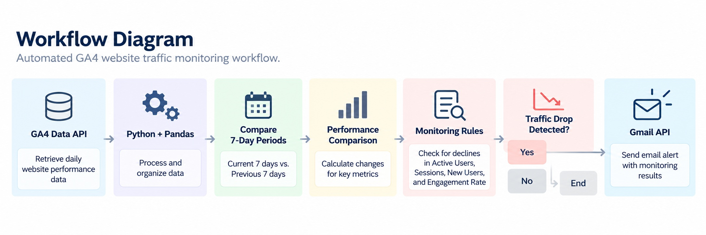
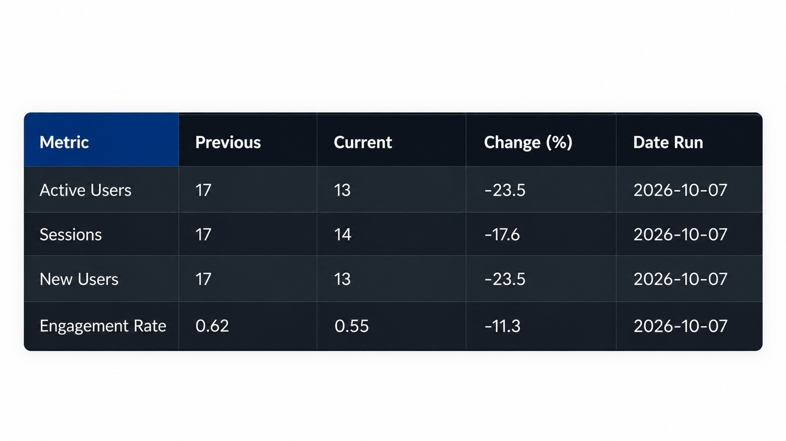
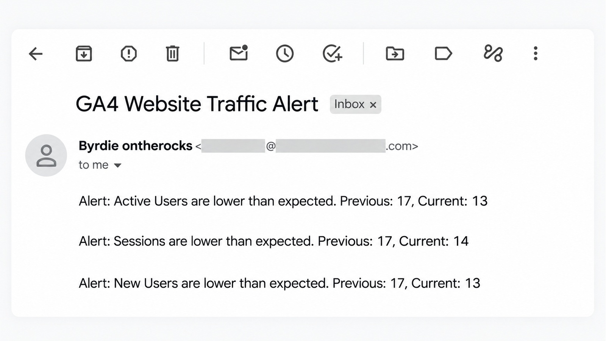

Marketing Analytics & Automation
GA4 Website Traffic Monitor
Automated Website Traffic Monitoring and Email Alerts Using Python
Project Overview
This project builds an automated website traffic monitoring system using Google Analytics 4 (GA4), Python, and the Gmail API.
Instead of manually checking website performance in GA4, I developed a Python workflow that retrieves daily traffic data, compares recent performance against the previous period, and identifies declines in key website metrics.
When a traffic decline is detected, the system automatically sends an email notification. The workflow runs locally on macOS using launchd, allowing website performance to be monitored without manually executing Python scripts.
What I Wanted to Build
- Automate website traffic monitoring using the GA4 Data API.
- Retrieve daily website performance without manually exporting reports.
- Compare the most recent seven days against the previous seven-day period.
- Monitor Active Users, Sessions, New Users, and Engagement Rate.
- Automatically send email notifications when traffic performance declines.
- Schedule the entire workflow to run automatically on a local Mac.
Workflow
The project connects data collection, performance analysis, monitoring rules, and email notifications into one automated workflow:
GA4 Data API → Python & Pandas → Performance Comparison → Monitoring Rules → Gmail API
Python retrieves daily website performance data from GA4. Pandas processes the data and calculates changes between the current and previous seven-day periods.
The monitoring results are saved to a local CSV report. If any monitored metric declines, the system generates an alert and sends an email through the Gmail API.
The workflow is scheduled using macOS launchd, which automatically executes the Python scripts at the configured time.

Automated workflow connecting GA4 data collection, performance comparison, monitoring rules, and conditional email alerts.
Approach
- Connected Python to Google Analytics 4 using the GA4 Data API.
- Retrieved daily Active Users, Sessions, New Users, and Engagement Rate.
- Used Pandas to organize daily performance data and define two consecutive seven-day periods.
- Calculated changes between the previous and current monitoring periods.
- Created monitoring rules that identify declines when current performance is lower than the previous period.
- Generated a CSV monitoring report containing the latest comparison results.
- Integrated the Gmail API to send email alerts when monitoring rules are triggered.
- Implemented OAuth authentication with saved authorization tokens and token-refresh logic.
- Configured macOS launchd to execute the workflow automatically each day.
Key Results
Automated Website Traffic Monitoring
Built a reusable Python workflow that retrieves GA4 website performance data and compares consecutive seven-day monitoring periods.
Traffic Decline Detection
Implemented monitoring rules for Active Users, Sessions, New Users, and Engagement Rate. The system identifies declines and generates alerts based on the comparison results.
Automated Email Notifications
Successfully integrated the Gmail API to deliver email notifications when traffic declines occur. The end-to-end workflow was tested successfully, including automated execution and email delivery.
Scheduled Local Automation
Configured macOS launchd to run the monitoring workflow daily at 8:00 PM without requiring VS Code or manual script execution.
Monitoring Results & Email Alerts

Performance Comparison
Monitoring report comparing current and previous seven-day periods across key website metrics.

Automated Email Alert
Email notification automatically generated when the monitoring system detects a traffic decline.
What I Learned
This project helped me move beyond retrieving and analyzing marketing data toward building an automated monitoring system.
I gained practical experience integrating multiple Google APIs, managing OAuth authentication, processing time-based performance data with Pandas, and implementing conditional monitoring rules.
I also learned how to schedule Python workflows using macOS launchd, allowing a local application to execute automatically without keeping a development environment open.
Most importantly, the project demonstrated how marketing analytics can be turned into an automated process that identifies performance changes and delivers actionable notifications.
Data & Privacy
The project uses OAuth 2.0 authentication to access Google Analytics 4 data and send email notifications through the Gmail API.
The public implementation is designed to keep authentication credentials, authorization tokens, and private website performance data separate from the source code.
The monitoring workflow runs locally on macOS. The public repository provides the implementation and documentation without requiring access to the original website's analytics account.
Explore the Project
The Python monitoring workflow, project structure, and implementation details are available on GitHub.
← Back to Projects